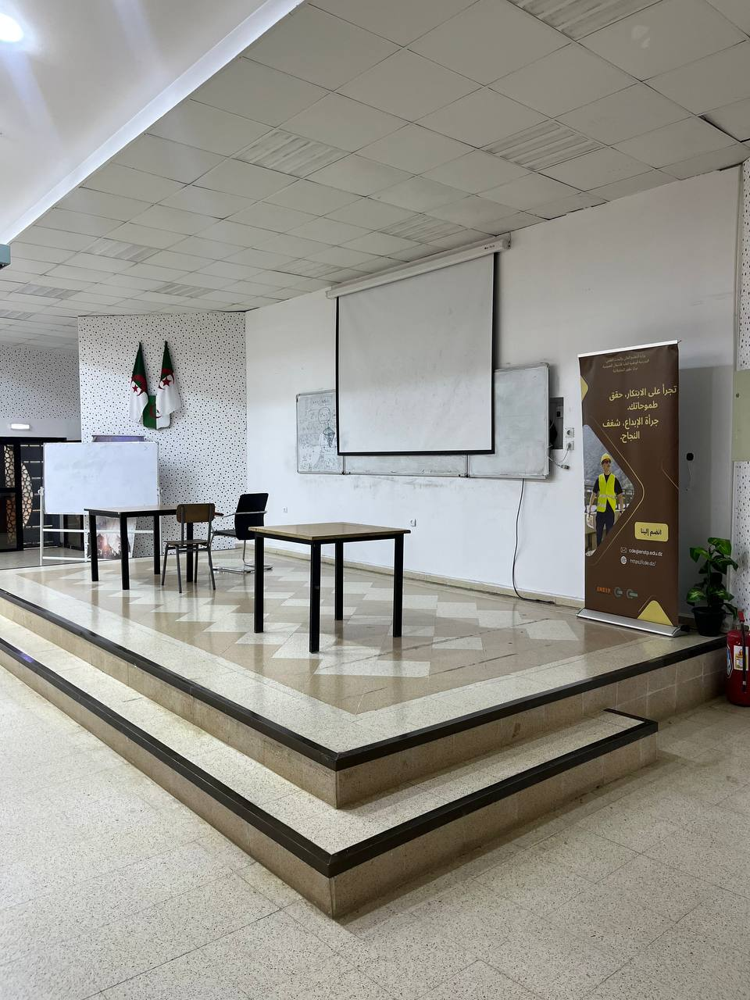
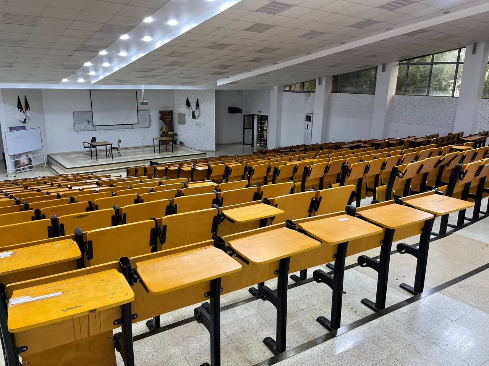
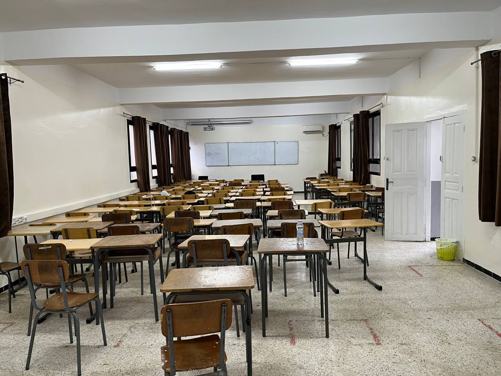
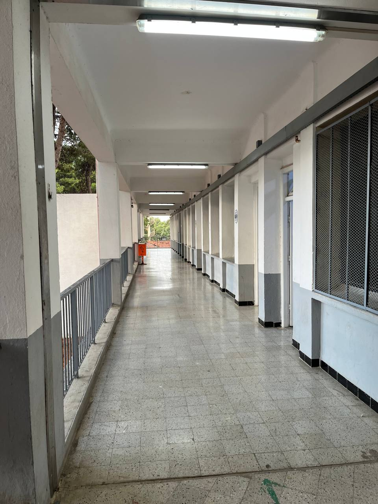
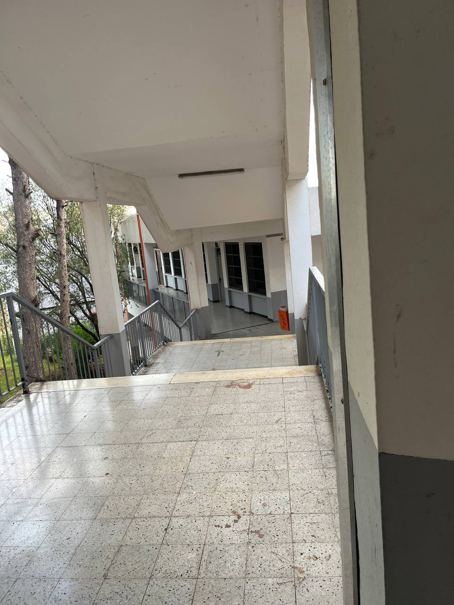

المدرسة الوطنية العليا للأشغال العمومية
فرانسيس جانسون (ENSTP)
الصرح الأكاديمي والهندسي الأعرق في الجزائر، تأسست سنة 1966، وتكرس جهودها لتكوين نخبة مهندسي الدولة في تخصصات الهندسة المدنية، المنشآت الفنية، الطرقات وإدارة مشاريع البناء الكبرى وفق معايير عالمية متطورة.
نبذة تاريخية وأصالة التأسيس
تأسست المدرسة رسمياً في شهر فبراير من عام 1966 تحت اسم مدرسة مهندسي الأشغال العمومية (EITP) بحسين داي، قبل أن تنتقل إلى موقعها الإستراتيجي الحالي ببلدية القبة (حي قاريدي) بولاية الجزائر العاصمة، لتشكل منذ ذلك الحين قطباً معرفياً وهندسياً فريداً.
تفتخر المدرسة بحملها لاسم الفيلسوف الفرنسي الراحل "فرانسيس جانسون", تقديراً لمواقفه التاريخية الشجاعة المساندة لثورة التحرير الوطني المجيدة. وقد تخرج من مقاعدها عبر العقود آلاف المهندسين الكفؤين الذين قادوا وهندسوا مشاريع البنية التحتية الكبرى داخل وخارج الوطن.
إدارة المدرسة
تدار المدرسة برؤية استراتيجية تسعى للارتقاء بجودة التكوين الهندسي، تعزيز الابتكار، وتوطيد الشراكة الوثيقة مع الهيئات والمؤسسات الاقتصادية الكبرى.

الدكتورة فوزية ميكاداش باشا
مديرة المدرسة الوطنية العليا للأشغال العموميةتشرف على توجيه السياسة البيداغوجية والبحثية، وتطوير الشراكات العلمية الوطنية والدولية لخدمة الطالب والمهندس الجزائري.
قاعة المحاضرات الكبرى (أ) - Amphithéâtre A
المدرج الرئيسي المحوري لاحتضان المحاضرات النظرية الكبرى، الملتقيات الوطنية، المؤتمرات العلمية والفعاليات الأكاديمية الرسمية للطلبة:



قاعة المحاضرات (ب) - Amphithéâtre B
مدرج حيوي متطور مجهز بالكامل بالوسائل السمعية البصرية الحديثة، مخصص للدروس التوجيهية والمحاضرات المتخصصة:


قاعات التدريس والأعمال الموجهة الأخرى
قاعات مصممة خصيصاً لتسهيل التفاعل المباشر بين الأساتذة والطلبة في مجموعات صغيرة خلال الحصص التطبيقية والموجهة:


